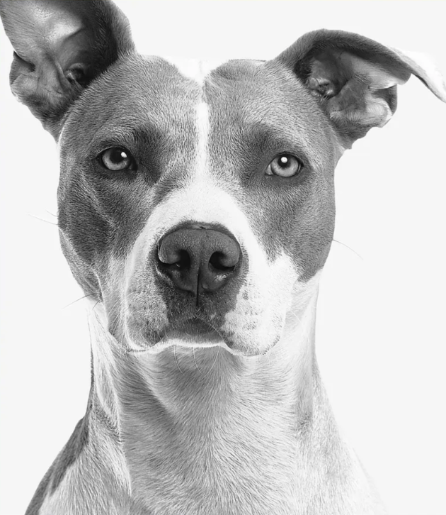
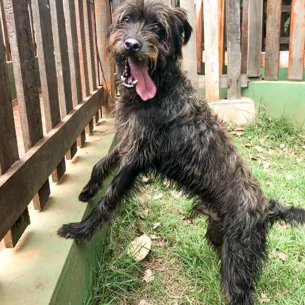
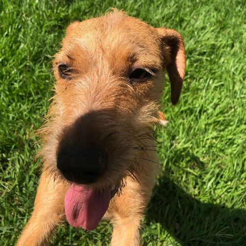
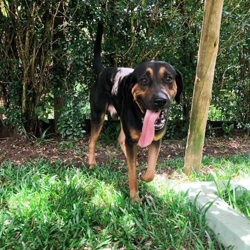
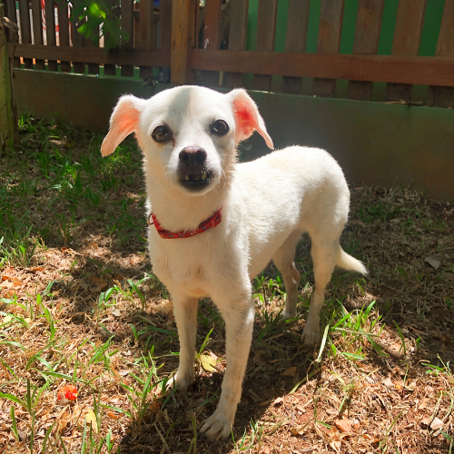

Seja Doador, e ajude um aumigo a ter uma vida digna
Cadastro realizado com sucesso!
Obrigado pelo seu apoio à ONG Paraíso dos Pets. Confira os dados enviados:
- Nome completo
- Telefone
Sobre a ONG Paraíso dos Pets
Fundada em Ribeirão Preto (SP) por Luiz Moraes, a ONG Paraíso dos Pets atua no resgate, reabilitação e cuidado diário de mais de 130 cães vítimas de abandono e maus-tratos.
Nosso abrigo oferece alimentação diária de qualidade, acompanhamento veterinário contínuo, vacinação, castração e muito carinho enquanto cada animal aguarda por uma adoção responsável ou recebe o amparo de nossos doadores e padrinhos.
Quem vive no abrigo

Mais de 130 vidas sob nosso teto em Ribeirão Preto
Seu cadastro como doador transforma o destino de cada um deles



Fotografias reais registradas no abrigo da ONG Paraíso dos Pets em Ribeirão Preto (SP): Zezinho, Tutti, Toddy e seus companheiros.